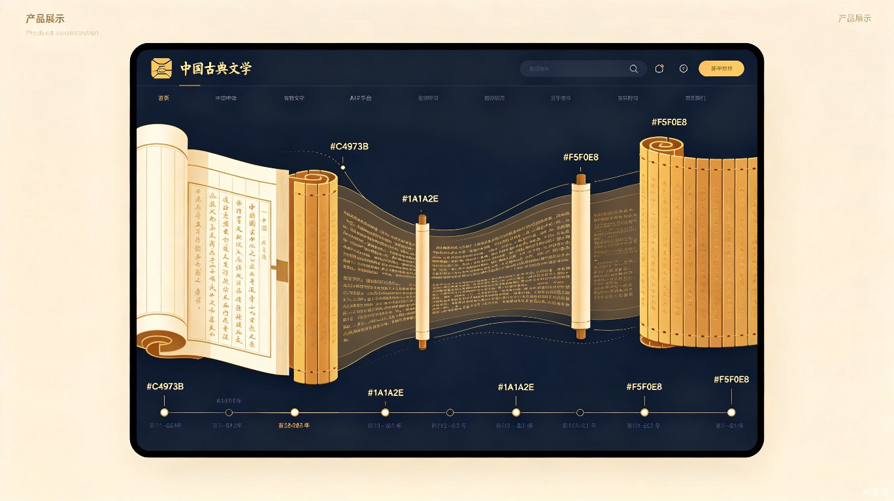
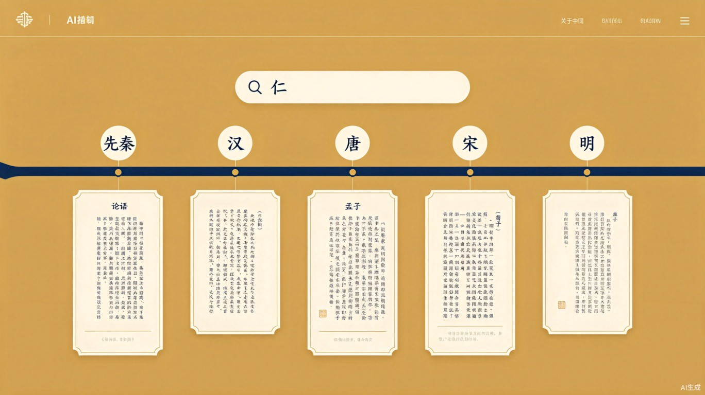
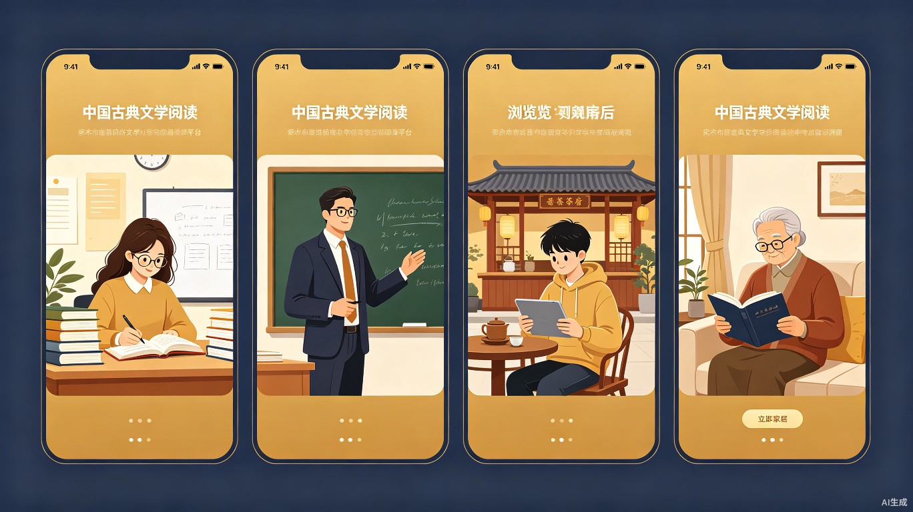

典脉 DianMap
AI 驱动的古籍时间线阅读平台 -- 让千年思想脉络一目了然

缘起：古籍阅读的困境与机遇
中国古籍浩如烟海，从《尚书》《论语》到《孟子》《荀子》《史记》，当我想了解"仁""礼""天人合一"等核心概念在不同时代的演变时，需要翻阅数十本书才能拼凑出完整的认知链条。当前阅读方式是"一本一本孤立地读"，缺乏跨时空、跨文献的横向串联能力。
古籍中蕴含的智慧跨越千年，但现代人接触古籍的门槛极高 -- 不是文字难懂，而是缺乏一条清晰的"认知路径"。如果能用 AI 构建一张"思想的时间地图"，让古籍中的核心理念按时代脉络清晰展现，将大幅降低传统文化学习的门槛。
这就是典脉的诞生初衷 -- 用 AI 为古籍赋予"时间维度"与"关联维度"，让千年思想脉络一目了然。
四大功能模块
主题时间线
输入"仁""礼""德""道"等关键词，AI 从先秦到明清的古籍中自动提取相关段落，按时代排列在可视化时间线上，一眼纵览千年演变。
跨典籍对比
选择同一主题下不同古籍的观点进行并排对比，AI 自动标注思想的继承、演变与分歧，揭示儒释道之间的对话脉络。
智能问答
基于古籍原文回答深度问题，如"孔子和孟子对'仁'的看法有何异同？"AI 引用原文逐条分析，有据可查。
学习路径
根据用户兴趣和水平自动生成从入门到深入的古籍阅读路线图，推荐先读什么、再读什么，建立系统认知框架。
以"仁"为例：跨越两千年的思想脉络
以下展示当用户搜索关键词"仁"时，典脉如何将不同时代的经典论述串联在一条时间线上：
从孔子到朱熹，"仁"的内涵从"行为规范"发展为"本体论范畴"。典脉让这条两千年的思想演变之路在一条时间线上清晰可见。
产品界面概念图
典脉的界面设计融合传统美学与现代交互，以温暖的金色与沉稳的墨色为主调，营造出"古典而不古板"的阅读体验：

谁需要典脉？

高校文史专业学生
论文写作中需要跨文献追踪概念演变，典脉将数周的文献整理压缩到几分钟。
中小学语文/历史教师
备课时快速关联典故出处，将课文知识与更广阔的历史脉络建立联系。
传统文化爱好者
想系统了解国学脉络而非碎片化阅读，典脉提供"从入门到精通"的路径。
终身学习者
想从零开始建立古文知识体系，典脉自动生成学习路线，降低入门门槛。
当前古籍阅读的四重困境
-
信息分散，检索困难
古籍内容分散在大量独立文献中，跨文献检索和关联极其困难，缺乏统一的语义检索入口。
-
门槛极高，无从入手
普通用户缺乏文献学功底，面对浩瀚古籍不知道该读哪本书、从哪里入手、按什么顺序。
-
效率低下，耗时漫长
研究一个概念需要翻阅大量书籍，手工摘录、整理、对比，耗时数天甚至数周。
-
缺乏全局，只见树木
传统阅读方式是线性的（一本一本地读），无法形成跨越千年的宏观认知。
为什么典脉值得做？
效率提升
将"翻几十本书找一段话"变成"一条时间线看尽千年演变"。原本需要数周完成的概念演变研究压缩到几分钟，学术研究效率实现数倍提升。
当前数字化古籍资源主要以"全文检索"为主，用户需要知道确切的关键词才能找到内容。典脉突破这一限制，通过 AI 的语义理解能力，让用户以"概念"而非"关键词"来探索古籍，真正实现"以科技赋能文化传承"的社会价值。
技术实现路径
典脉的核心技术流程如下：
对接开源古籍数据库（如国图数字化资源、中国哲学书电子化计划）
利用大语言模型进行古文分词、语义标注、概念关联提取
按时代、典籍、概念构建结构化知识图谱
前端可视化呈现，支持筛选、对比、问答
flowchart LR
A[用户输入主题词] --> B[AI 语义理解]
B --> C[古籍库全文检索]
C --> D[段落提取与标注]
D --> E[时间线排序]
E --> F[可视化展示]
F --> G{用户操作}
G -->|深入阅读| H[展开原文+注释]
G -->|对比分析| I[跨典籍并排对比]
G -->|智能问答| J[基于原文回答问题]
为什么选择 Web 应用？
产品形态：Web 应用（响应式网站）
选择 Web 应用的理由：
- 零安装门槛：用户打开浏览器即可使用，适合教育场景
- 可视化优势：时间线、对比视图等复杂交互在 Web 上体验最佳
- 跨平台适配：桌面端深度研究 + 移动端碎片化阅读
- 易于分享传播：可生成时间线链接直接分享给同学/同事
典脉 -- 以时间线唤醒千年智慧
用 AI 连接古今，让每一个人都能轻松走进中华传统文化的瑰丽殿堂。